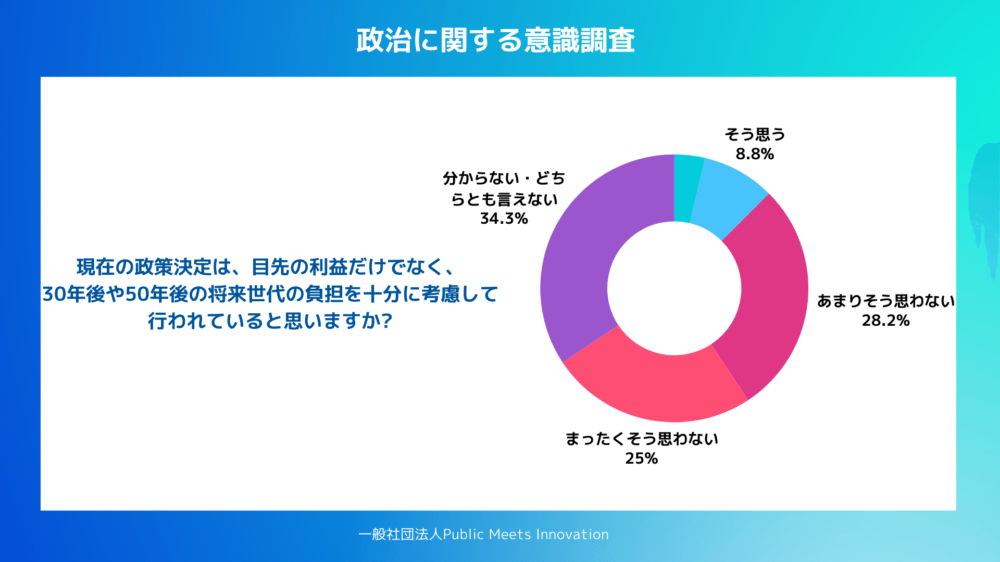

PMIで実施した調査では、40歳以下の回答者の51.1％が「政治は世代間の利益バランスを取れていない」と回答した。肯定的に捉える回答は11.4％にとどまっている。
https://note.com/pmi_thinktank/n/nbe7f2210fe7f

2026年1月実施「政治に関する意識調査」より
物価上昇が続き、毎月の家計負担が増している中で、負担を軽減してほしいという声が高まるのは自然である。しかし現役世代の間には、「結局、未来にツケを回しているだけではないか」という冷ややかな見方も広がっていると感じる。 社会保障の現実──現役世代に集中する負担
日本の社会保障給付費はいま約140兆円規模に達している。年金が約4割、医療が約3割を占め、財源はおおむね社会保険料が約6割、公費（税）が約4割である。
現役世代は（本人負担だけでも）給与の約15％前後を社会保険料として拠出しており、所得税より重く感じる層も少なくない。一方で給付の多くは高齢者世代に向かう。ここに「負担と給付のズレ」が生まれやすい構造が存在する。
将来を見据えない政治への警鐘
同じ調査では、「現在の政策は将来世代の負担を十分に考慮しているか」という問いに対し、否定的回答が53.2％に達した。若い世代ほど、現在の政治を短期志向的と捉えていることがうかがえる。

2026年1月実施「政治に関する意識調査」より
選挙サイクルを意識した人気取り政策、将来の財政リスクを回避せず先送りする姿勢が、「自分たちの将来に責任を持たない政治」として映っているのである。
減税と保険料引き下げ──誰が払うのか
減税や社会保険料の引き下げは、短期的には現役世代の可処分所得を増やし、家計に一定の支援となることは確かである。しかし財源が不明確なまま進めば、将来的な社会保障給付の削減や増税という形で、再び現役世代が負担を強いられる可能性が高い。
たとえば食料品の消費税ゼロは年4〜5兆円規模の税収減となり得る。社会保険料引き下げも、幅によっては数兆円規模の財源不足を生む。こうした施策が財政規律を緩めれば、円安・金利上昇・物価高といった副作用を引き起こす懸念も否定できない。
「財源なき公約」に現役世代は納得しない
選挙において減税や負担軽減が訴求力を持つのは当然である。しかし政治家が示すべきなのは耳障りのよい約束だけではなく、その実現に伴うコスト、具体的な財源の根拠、制度設計の全体像を明確に説明する責任である。
「将来は何とかなる」「景気が良くなれば解決する」といった曖昧な説明では、もはや納得は得られない。
各党はより詳細に、演説でも資料やパワポを配布するくらいで、財源の根拠を明確にした説明を求めたい。責任を果たさない公約に、未来を委ねるわけにはいかない。